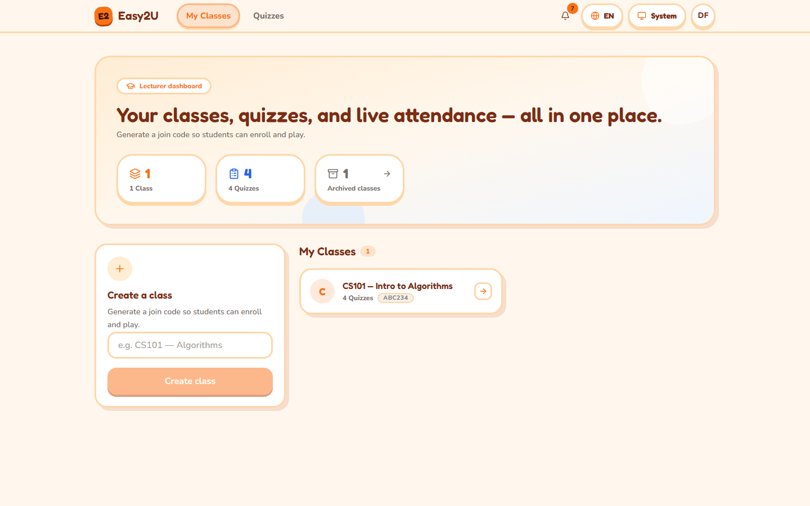
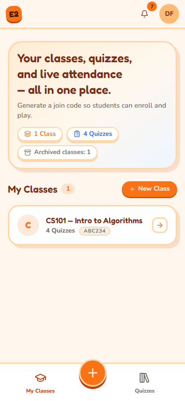
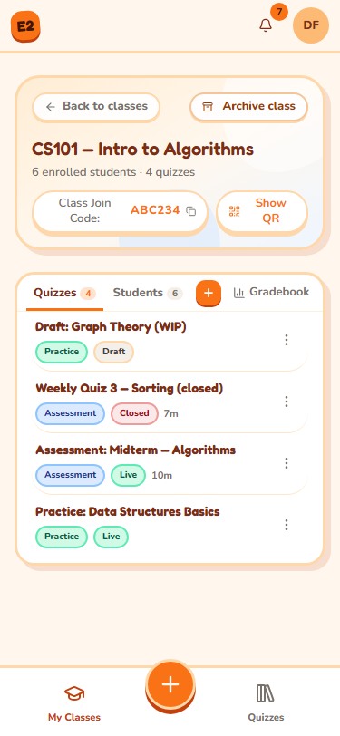
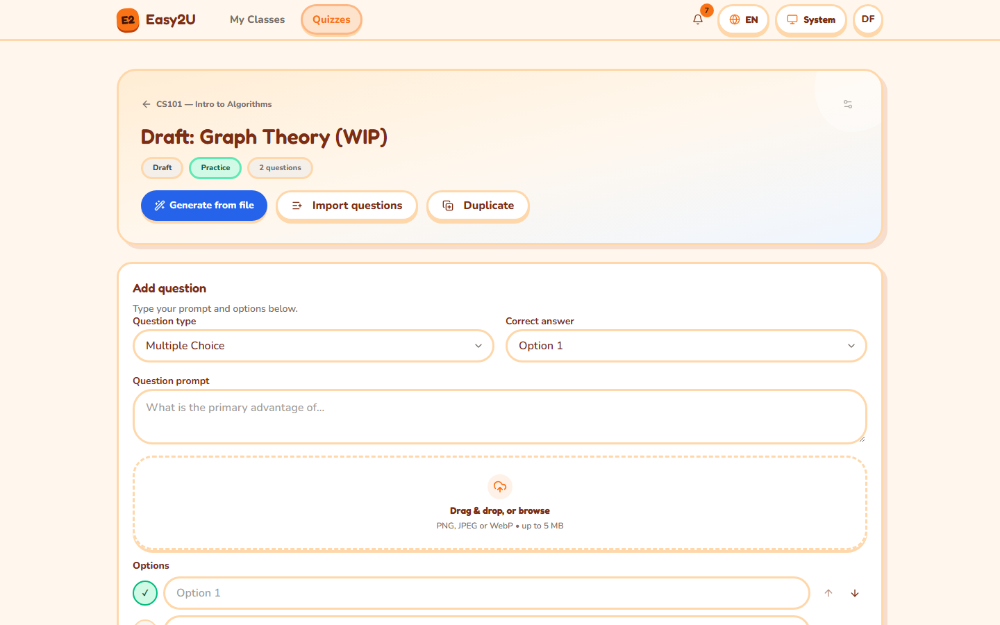
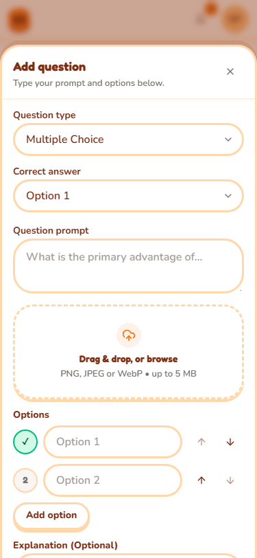
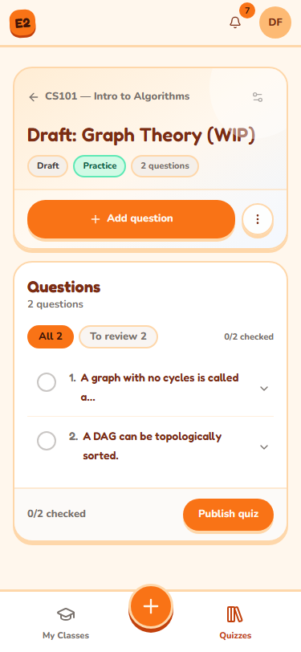
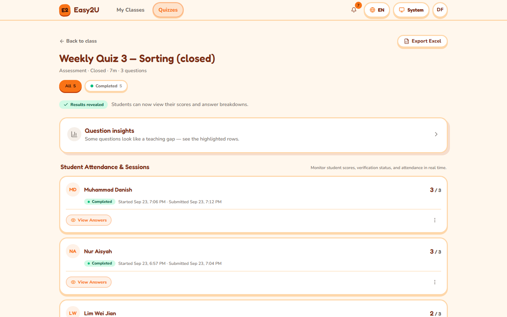
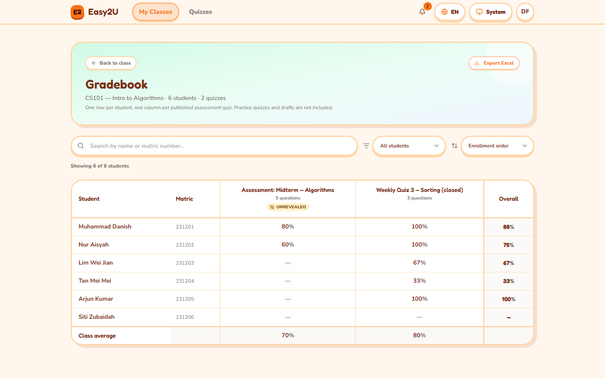
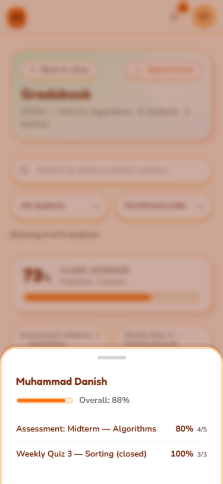

Lecturer guide
On this page 8 topics
English internal edition. See the manual home for the quick start and Troubleshooting for common problems.
This guide covers classes, quiz authoring, assessment monitoring, results, and reports. An institution may disable AI generation or web search. Those options appear here only when they are available in your account.
Sign in as a lecturer
You need: a lecturer account, or a lecturer invite code supplied by your institution. A student account does not gain lecturer access by changing its profile.
- On Sign in, enter your Email address and Password, then select Sign in. If your institution offers it, you can select Sign in with Microsoft instead.
- To make a new lecturer account, select Create one now, enter your name, email and password, select Lecturer under I am a…, and enter the Lecturer invite code supplied by your administrator.
- Select Create account. If the app asks you to confirm your email, open the confirmation message before signing in.
What happens next: you reach your lecturer dashboard, starting at My Classes. If you are sent to the student area, get help with your role or invite code.
If it does not work: select Forgot password? on the sign-in page, or use sign-in troubleshooting.
Find your way around
Desktop: use My Classes and Quizzes in the top navigation. The notification bell and account menu are in the header.
Phone: use the bottom dock for classes and quizzes. On My Classes, use New Class to create a class; the center Create control opens choices for a new class or quiz. Open the account sheet for language, theme and sign-out options. The dock can hide while the on-screen keyboard is open; close the keyboard to see it again.
{kind=link}

{kind=link}

The Quizzes library shows quizzes from all of your classes, including quizzes in archived classes. Search by title there. Open a draft in the builder or select Results for a published quiz.
Create a class and invite students
You need: a lecturer account. A class gets its own six-character join code when you create it.
- Open My Classes.
- Desktop: in Create a class, enter a Class title and select Create class. Phone: select Create > New class, enter the title in the sheet, and select Create class.
- Open the new class card. Find its Class Join Code.
- Select Copy join code to send the code through your usual course channel. For students in the room, select Show QR and let them scan it. A student who is signed out is sent through sign-in and then returns to the join confirmation.
- Ask students to confirm the class name and join. Open the class Students tab or roster section to check enrollment.
{kind=link}

What happens next: the class is listed under My Classes and you can create quizzes in it. Do not send the code to someone who should not join.
If it does not work: check the class title and connection, then see class and join troubleshooting.
Review the class roster
- Open My Classes, then open the class.
- Desktop: find the Students section or tab. Phone: select the Students tab to switch from class quizzes to the roster.
- Check the student names and matric numbers shown there. For a large class, a notice may say only the first 100 students are listed; other enrolled students still count toward quizzes and exports.
For a student who cannot join, confirm you shared this class's current code and that the class is active. The student join guide can be sent to them.
Archive or restore a class
Archiving hides a class from students and stops new joins while preserving quizzes, results and audit history. Restoring makes its live quizzes available again. Confirm with your institution before archiving a class still in use.
- Open the class from My Classes and select Archive class.
- Read Archive this class?, then select Archive class to confirm.
- To restore it, open Archived classes, find the class, select Restore, and confirm Restore class.
What happens next: the restored class returns to My Classes. If it had live quizzes, check their schedule and availability before telling students to resume.
Create a quiz
You need: an active class. Decide whether students need repeat practice with immediate feedback or a controlled assessment.
- Open My Classes and choose the class. Select New Quiz or find Create a new quiz. From the Quizzes library, you can also start New quiz and choose a destination class.
- Enter the Quiz title and choose Quiz mode: Practice permits repeat attempts and immediate feedback; Assessment uses controlled attempts and may require face verification.
- For an assessment, set Time limit if needed. Leave No time limit when there is no countdown.
- Optionally set Opens at and Closes at. The form labels these times in Malaysia time. The closing time must follow the opening time.
- If appropriate, turn on Allow retakes and choose Max attempts. Review Shuffle question & option order and Hand gestures before publishing; those draft settings cannot be changed once the quiz is live.
- Select Create quiz to open its draft builder.
What happens next: the quiz is a draft, hidden from students until you publish it. A live quiz can still be unavailable before its opening time or after its closing time. See quiz states.
If it does not work: verify the class is active and that the closing time follows the opening time. See quiz troubleshooting.
Add and edit questions
- Open the draft quiz's builder and find Add question. Phone: use the builder's add-question control to open its sheet.
- Select Question type: Multiple choice, True / False, Multiple select, or Short answer (AI-marked).
- Enter the Question prompt. For option-based questions, enter distinct options and mark the Correct answer or Correct answers. For a short answer, provide a clear Answer key / rubric for the marker.
- Add an optional explanation or question image, then select Add this question. Review the new item in Questions.
- Use Edit, Move up, Move down, or Delete on a draft question as needed. Phone: expand the compact question controls if the actions are not visible immediately.
{kind=link}

{kind=link}

The builder accepts at most 30 questions in a quiz. Multiple-choice options are limited, and multiple-select has a smaller option cap. Follow the form's validation message if it rejects a question. Hand gestures may be unavailable for some question types or when Hand gestures is off; students can use the offered keyboard or tap controls.
What happens next: the draft remains editable. Before publishing, check each answer key and explanation. Deleting a question also removes its image and cannot be undone.
Import several questions
- In a draft builder, select Import questions.
- Paste a pipe-separated Question list, or select Upload file for a
.txtor.csvtext file. - Follow the example in the dialog to mark the correct answer with
*. Check Preview and correct every line-level warning. - Select Import questions when the preview shows the intended items.
Import adds to the existing draft. It does not replace it. The dialog shows the remaining slots up to the 30-question limit. If you need to change an imported item, use Edit in the builder.
Generate questions with AI, when available
AI output is a draft. You are responsible for checking wording, answer keys, images and suitability for your class before publication.
- In a draft builder, select Generate from file. Choose Upload Documents for supported files or Paste Notes for text. The dialog accepts PDF, DOCX, PPTX, TXT, MD and supported image files; it shows the current per-file and total limits.
- For an image or scanned PDF, choose the available Document Scanner. Select Read Files & Continue or Continue with Text and inspect the extracted content. If pages were missed, correct that before generating.
- Choose the number of questions, difficulty, format and quiz language. Use Custom AI Focus & Directives for topic guidance. If offered, Add up-to-date web knowledge searches for extra material in addition to your upload or notes.
- Choose Add to existing questions or Replace all existing questions. Replacing removes the current draft questions. Confirm that choice before selecting Generate quiz.
- Wait for Generation complete, then select Review questions. Correct mistakes in the builder; use Regenerate with AI on an individual question only when needed.
What happens next: questions are saved to the draft, not automatically published. The builder may mark generated questions To review; use that filter and Mark checked as you verify them.
If it does not work: use the dialog's retry or scanner choice, try a smaller or clearer source, or add questions manually. See AI and import troubleshooting.
Duplicate a quiz
- Open the quiz builder and select Duplicate. The action may be under More actions on a narrow screen.
- Choose an active Destination class and select Duplicate.
- Select Open draft to review the new copy before publishing it.
The copy includes questions, settings and images, but does not copy student attempts or results. The destination cannot be an archived class.
Publish and manage a quiz
Only a draft with at least one question can be published. Publishing makes it live, but an opening time can still prevent students from starting yet.
- In the draft builder, review every question and its answer key. Check Quiz settings, including mode, time limit, schedule, retakes, shuffling and hand gestures.
- Select Publish quiz and wait for the Live status.
- Open Results to monitor attempts. If you set an availability window, check its Opens at and Closes at values before sharing the quiz.
{kind=link}

What happens next: enrolled students can see the live quiz. They can start only while it is open and they have an available attempt.
Change a live quiz's availability
Some live settings, including the availability window and retakes, can be managed after publication. Question text, answer keys, shuffling and the gesture setting are draft-only. Use Edit settings or the schedule control where the quiz shows it, save the permitted changes, and confirm what the student quiz card now says.
Close a quiz
Closing is one-way. Students cannot start new attempts or answer more questions; a student already taking it can still submit recorded work. You may have to decide whether to reveal existing results as part of closing.
- Open the live quiz's builder or Results and select Close quiz.
- Read Close this quiz?, including any warning about submitted students whose results remain hidden.
- Choose Reveal first, then close if it is offered and you want students to see their results, or choose Close anyway to leave results hidden.
What happens next: the status becomes Closed. You cannot return it to Live. Check Release results if students are waiting for scores.
Review attempts and help students
Open the class quiz and select Results. The Quiz Results & Integrity page groups sessions as Completed, Flagged, Abandoned, or In progress. Select a student's row to inspect their session, answer breakdown, and Integrity timeline. An event is a signal to review in context; it is not by itself a final judgment about a student.
Desktop: use the results table and row actions. Phone: use the compact status filters and open the student's detail or Session actions menu.
{kind=link}

Review a pending face enrollment
A panel on My Classes can list students whose face enrollment needs a decision. Until reviewed, they cannot start a verified assessment.
- Open My Classes and find the face enrollments need review panel.
- Check the student and class using your institution's normal identity process. Select Approve if the enrollment is correct, or Reject — ask to re-enroll if the student must capture again.
- Tell the student the outcome through the usual class channel.
If you cannot establish the student's identity, contact your institution's administrator before approving.
Unlock, exempt, or reset an attempt
These are different actions. Choose the least disruptive one that addresses the student's situation.
| Action | Effect |
|---|---|
| Unlock | Lets a flagged student continue after your review. |
| Face-exempt | Stops face checks for this one attempt. You must record a reason. |
| Reset | Permanently deletes this attempt's answers, progress and integrity details. It permits the student to start again and cannot be undone. |
- On Results, find the student's session and read the status and Integrity timeline.
- Open Session actions if the buttons are in a menu. Select Unlock, Face-exempt, or Reset as appropriate.
- For Face-exempt, enter the required Reason. For Reset, read the confirmation carefully before completing it.
- Refresh your view of the student's session, then tell the student what to do next. Do not tell them to start a second attempt unless the resulting status allows it.
If it does not work: see attempt troubleshooting or get more help.
Review and adjust a short-answer mark
AI-marked short answers may show Pending, Needs review, or Marking failed. Inspect the student's answer and rubric before releasing results.
- Open Results, select the student's session, and locate the short-answer question.
- Compare the response, Rubric, and any AI rationale. Select Adjust mark when a correction is needed.
- Choose the permitted New mark, enter a Reason, and save.
If results were already released, follow the page's prompt to republish the corrected mark so students see the change.
Release and analyze results
Assessment scores can be visible to lecturers before students see them. Students see a score and answer review only after the results are released. Practice quizzes give more immediate feedback. Some assessments can be set to release automatically once the completion conditions are met.
Reveal assessment results
- Open the assessment's Results page and check completed attempts and any Pending or Needs review marks.
- Read the Results are hidden panel. Select Reveal to students when the results are ready, then confirm.
- Check that the page says Results revealed. Students can then open their scores and answer breakdowns.
Revealing is a one-way release. If you later correct a short-answer mark, follow the republish instruction on the student's session detail.
Inspect question insights
On Results, open Question insights. Compare the per-question correct rate and option choices to find questions students struggled with. A highlight such as Only …% correct is a prompt to review the teaching or question wording, not a diagnosis on its own. The page will warn you if its analysis was truncated for a very large class.
Open and export the gradebook
- Open My Classes, choose the class, and select Gradebook.
- Desktop: scan the student-by-assessment table, then search, filter, or sort. Phone: scan the student list; select a student or quiz to open its bottom sheet. Only published assessments appear in the gradebook.
- Select Export Excel to download the class workbook. Keep it in an institution-approved location because it contains student information.
{kind=link}

{kind=link}

For one quiz, select Export Excel on that quiz's Results page. The quiz export and class gradebook export are different reports. An unrevealed marker means the lecturer can see the score while students cannot yet see it.
If it does not work: review filters, the roster and quiz status, then see export troubleshooting.
Notifications and account
Use the notification bell for updates such as a student attempt, flagged session, or enrollment needing review. Open a notice to reach its relevant class or quiz. In the account menu, switch Language or Theme, or select Sign out. On a phone, these settings appear in the account sheet.
For a missing control, a code that does not work, or a failed export, start with Troubleshooting. If the issue persists, use Get more help.